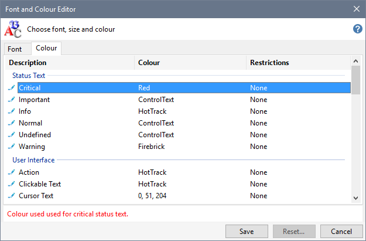
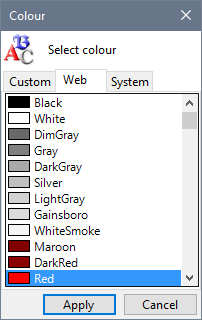
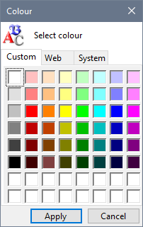
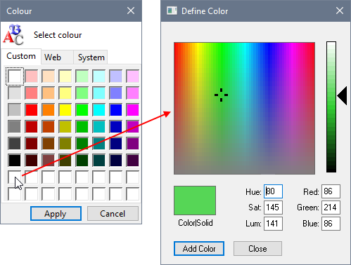
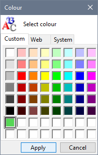

Click the Colour tab to change the colours used by the Installer Tool.

Click the  Edit Icon, Right-Click, Double-Click or press the Space Bar to display the Colour dialogue.
Edit Icon, Right-Click, Double-Click or press the Space Bar to display the Colour dialogue.

Create a custom colour
- Click the Custom tab.

- You can select one of the predefined colours or Right-Click one the colour squares at the bottom of the dialogue to display the Define Colour dialogue.

- Click Add Colour when you have defined your custom colour and then click Apply.

You can also use the Theme Colours to make changes to the Installer Tool's default colours.
Related Topics
Change text size
Change Theme Colours
Customise Fonts
Customise Colours
Customise Theme colours